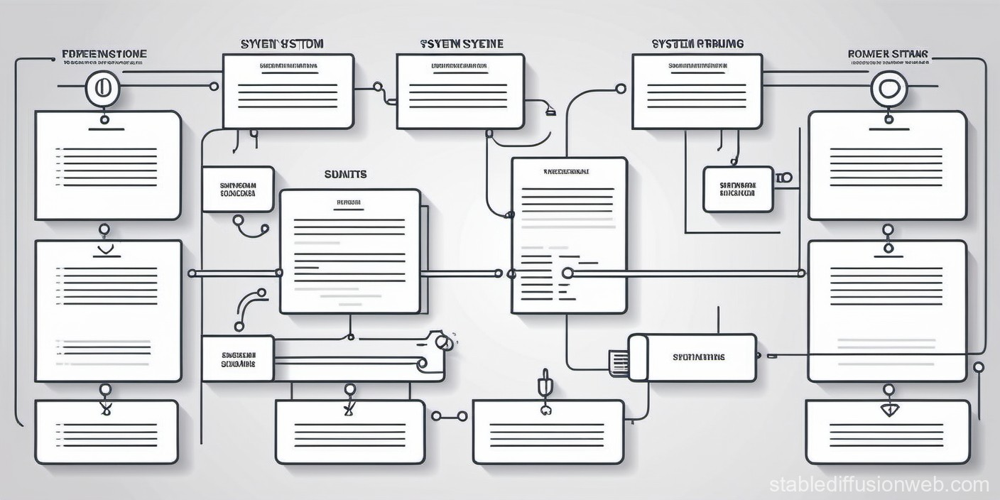

ようこそ、Ari Evalへ！
このページは、Ariと呼ばれる新しい評価システムに関連する情報を提供しています。 Ariは、様々なコンテキストでの評価や分析に役立つ革新的なツールです。 以下は、Ariが提供する主な機能の概要です。
-
多角的な評価
Ariは、異なる側面から対象を評価し、包括的な結果を提供します。これにより、より深い理解と洞察を得ることができます。
-
リアルタイム分析
Ariはリアルタイムでデータを分析し、変化する状況に即座に対応します。これにより、迅速かつ効果的な意思決定が可能です。
-
ユーザーフィードバック
Ariはユーザーのフィードバックを学習材料として活用し、進化します。ユーザーの要望に応じて、より洗練された評価を提供します。
-
シンプルな操作性
Ariは直感的で使いやすいインターフェースを提供し、利用者が簡単に活用できるように工夫されています。
このページでは、Ariの基本的な機能や活用法に関する情報が提供されています。 詳細なガイドやよくある質問については、サポートセクションをご覧ください。 Ariを活用して、新しい視点から世界を見てみませんか？ さあ、Ariとともに情報の奥深くへダイブしましょう！
機能説明
Ariはさまざまな用途で活用できる多彩な機能を提供しています。以下ではその一部をご紹介します。
-
カスタムレポート作成
Ariを使用して特定の領域に関するカスタムレポートを簡単に作成し、必要な情報を一元管理できます。
-
データの可視化
豊富なグラフやチャートにより、Ariが分析したデータを視覚的に理解しやすく表示できます。
-
ユーザー管理
複数のユーザーを一元管理し、アクセス権や評価結果の共有を簡単に行えます。
カスタムレポート
当社のサービスでは、ユーザーが特定の要件やニーズに合わせてデータを分析できるように、カスタムレポート機能を提供しています。
主な特徴:
- 柔軟性 カスタムレポートは柔軟で、ユーザーが必要なデータ項目や表示形式を選択できます。
- フィルタリング データを特定の条件で絞り込むためのフィルタリングオプションが豊富に用意されています。
- ダウンロード 作成したレポートはCSVやPDFなどの形式でダウンロードできます。
カスタムレポートを作成するには、以下の手順に従ってください。
- ダッシュボード画面で「レポート作成」ボタンをクリックします。
- 必要なデータ項目を選択し、表示形式やフィルタリング条件を設定します。
- 作成ボタンをクリックして、カスタムレポートを生成します。
- 生成されたレポートはダウンロードや共有が可能です。
カスタムレポート機能を利用して、ビジネスの効率向上やデータ分析の精度向上を実現しましょう。
利用ガイド
Ariの効果的な活用方法やヒントについて知りたい場合は、利用ガイドをご参照ください。 これにより、Ariを最大限に活かし、目標達成に向けた戦略を構築できます。
